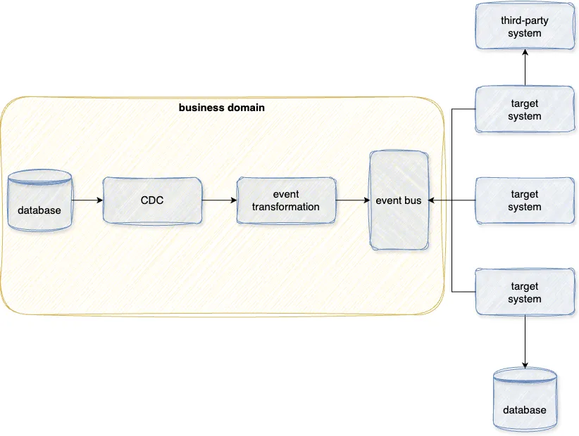
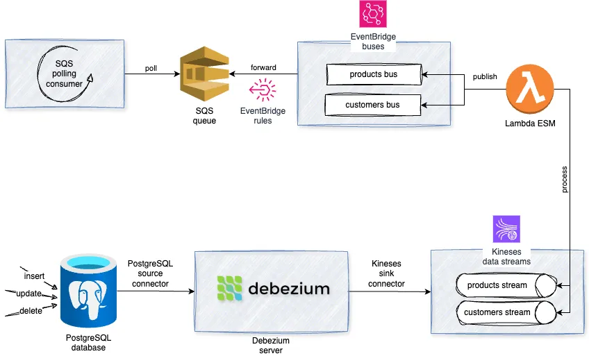

Change Data Capture (CDC) with PostgreSQL, Debezium, Kinesis, and EventBridge
This article explores building a CDC pipeline from start to finish. Initially, I will provide an overview of the CDC pattern, explain the fundamental concepts behind it, and outline the key components integral to a real-time event-driven CDC system. Subsequently, I will delve into the implementation details, sharing code snippets, practical examples, and more.
The code snippets provided in this article are simplified versions designed for demonstration purposes. For the full, complete versions of the code and additional details, you can find the source code in this repository.
What is CDC?
Change Data Capture (CDC) refers to the process of identifying and capturing changes made to data in a database (through INSERT, UPDATE, DELETE or equivalent operations) and subsequently delivering those changes in real-time to downstream systems.
Initially, CDC gained traction as an alternative approach to cron-based batch data replication, particularly for populating data warehouses in ETL (Extract, Transform, Load) jobs. However, in recent years, CDC has become the standard method for all data replication pipelines primarily because of its real-time nature.
Use cases
Utilizing CDC can benefit in the following use cases:
- Process streams of data in real-time for various applications using event-driven architecture (the main focus of this article).
- Synchronize data across systems to keep them updated.
- Replicate data changes for disaster recovery.
- Automate cache invalidation.
- Track and report data changes for audit trail and compliance purposes.
- Optimize ETL jobs by loading only changed data incrementally.
- Update customer data in real-time in CRM systems.
- Enhance data consistency across microservices and distributed systems.
- and more…
How does CDC work?
There are several methods for implementing CDC
Trigger-based
In trigger-based CDC, database triggers are created for each monitored table, which executes custom logic to capture and log the changes into a CDC-specific table which stores information about the changed data, including timestamps and identifiers.
This approach reduces database performance because it requires multiple writes each time a row is updated, inserted, or deleted.
An example of capturing data changes through a database trigger which stores the modified data in a table called data_change_log.
-- Create the trigger
CREATE OR REPLACE FUNCTION customers_trigger_function()
RETURNS TRIGGER AS $$
BEGIN
INSERT INTO data_change_log (table_name, operation, timestamp, data)
VALUES ('customers', TG_OP, NOW(), NEW);
RETURN NEW;
END;
$$ LANGUAGE plpgsql;
-- Attach the trigger function to the table
CREATE TRIGGER customers_trigger
AFTER INSERT OR UPDATE OR DELETE
ON customers
FOR EACH ROW
EXECUTE FUNCTION customers_trigger_function();
Timestamp-based
Timestamp-based CDC involves periodically querying the source database to identify changes since the last capture point (e.g., modified timestamps). This approach relies on comparing data snapshots at different intervals to detect modifications.
This approach adds additional overhead to the database due to frequent querying, and it requires additional logic to ensure that delete operations are properly tracked and replicated to the target.
An example of capturing data changes using the modified_at timestamp column and a checkpoints table to track previous capture times.
CREATE OR REPLACE FUNCTION get_modified_customers_since_last_capture()
RETURNS TABLE (id INTEGER, name VARCHAR(255), email VARCHAR(255), created_at TIMESTAMP, modified_at TIMESTAMP) AS $$
#variable_conflict use_column
DECLARE
latest_capture_time TIMESTAMP;
BEGIN
-- Fetch the latest capture time from the checkpoints table and store it in the variable
SELECT last_capture_timestamp INTO latest_capture_time
FROM checkpoints
WHERE table_name = 'customers';
-- Capture changes in the 'customers' table since the latest capture change
RETURN QUERY
SELECT id, name, email, created_at, modified_at
FROM customers
WHERE modified_at > latest_capture_time;
END;
$$ LANGUAGE plpgsql;
SELECT * FROM get_modified_customers_since_last_capture();
Log-based
Log-based CDC uses transaction logs or transactional journals provided by the database management system (DBMS) which contain a record of all changes made to the database.
It reads the transaction logs of the source database, parsing and interpreting the log entries to identify changes. It then extracts relevant information from the logs, such as the affected data and the type of operation performed, to replicate the changes to the target system.
This approach is widely adopted due to its minimal impact on the database. It doesn’t need additional queries for each transaction. However, parsing the transaction logs of a database can pose challenges at times.
An example of using PostgreSQL logical decoding mechanism that relies on Write-Ahead Logging (WAL) to capture the logical changes made to the data.
-- Create a slot named 'test_slot' using the output plugin 'test_decoding'
SELECT * FROM pg_create_logical_replication_slot('test_slot', 'test_decoding');
-- Insert rows in the customers table
INSERT INTO customers
VALUES (DEFAULT, 'Oliver Alsop', 'oliver@mail.com', DEFAULT, DEFAULT),
(DEFAULT, 'Trevor Baker', 'trevor@mail.com', DEFAULT, DEFAULT);
-- Fetch changes from the 'test_slot' logical replication slot
SELECT * FROM pg_logical_slot_get_changes('test_slot', NULL, NULL);
lsn | xid | data
-----------+-------+---------------------------------------------------------
0/BA5A688 | 10298 | BEGIN 10298
0/BA5A6F0 | 10298 | table inventory.customers: INSERT: id[integer]:1006 name[character varying]:'Oliver Alsop' email[character varying]:'oliver@mail.com' created_at[timestamp without time zone]:'2024-04-11 00:21:33.970134' modified_at[timestamp without time zone]:'2024-04-11 00:21:33.970134'
0/BA5A6F0 | 10298 | table inventory.customers: INSERT: id[integer]:1006 name[character varying]:'Trevor Baker' email[character varying]:'trevor@mail.com' created_at[timestamp without time zone]:'2024-04-11 00:22:33.970134' modified_at[timestamp without time zone]:'2024-04-11 00:22:33.970134'
0/BA5A8A8 | 10298 | COMMIT 10298
(4 rows)
Event-driven CDC system, how?
CDC positions data stores as first-class citizens in the Event-Driven Architecture (EDA). The benefit comes from enabling the database to function as an event producer without adding event production overhead or requiring changes to the service that manages the database.
Consider a scenario with several services, each managing a specific business domain. By utilizing CDC, these services’ data stores can emit data change events directly to the domain event bus or message bus which will enable other systems to act on these events when necessary.

Event transformation is crucial in this setup to transform events using a versioned data contract that hides the internal structure of the database schema. This prevents tight coupling between downstream systems and the database schema, allowing modifications to the schema without affecting them.
Tooling
Open-Source
One of the most prominent open-source options is Debezium as it offers various database source connectors such as MongoDB, MySQL, and PostgreSQL, among others. It also supports a range of sink connectors including Kafka, Redis, Kinesis, HTTP API, and more.
Commercial
There are many options available like Google Datastream and AWS Database Migration Service, among others which offer a fully managed CDC engine.
Pricing varies based on data volume, rows replicated, connectors, and operational runs.
Implementation
For this article, I am using:
- PostgreSQL database as the source.
- Debezium server to capture data changes.
- AWS Kinesis data stream as the destination.
- AWS Lambda to transform events via event source mapping (ESM).
- AWS EventBridge event bus as the event storage.
- AWS SQS queue as the final target for bus events.
I am using LocalStack to simulate AWS services locally. I use its initialization hooks feature to provision necessary AWS resources with bash scripts.

PostgreSQL database
The source database consists of four tables: products, stock, customers, and orders.
-- Create the schema that we'll use to populate data and watch the effect in the WAL
CREATE SCHEMA inventory;
SET search_path TO inventory;
-- Create products table
CREATE TABLE products (
id SERIAL NOT NULL PRIMARY KEY,
name VARCHAR(255) NOT NULL,
description VARCHAR(512),
created_at TIMESTAMP NOT NULL DEFAULT CURRENT_TIMESTAMP,
modified_at TIMESTAMP NOT NULL DEFAULT CURRENT_TIMESTAMP
);
-- Create stock table
CREATE TABLE stock (
product_id INTEGER NOT NULL PRIMARY KEY,
quantity INTEGER NOT NULL,
created_at timestamp NOT NULL DEFAULT CURRENT_TIMESTAMP,
modified_at timestamp NOT NULL DEFAULT CURRENT_TIMESTAMP,
FOREIGN KEY (product_id) REFERENCES products(id)
);
-- Create customers table
CREATE TABLE customers (
id SERIAL NOT NULL PRIMARY KEY,
name VARCHAR(255) NOT NULL,
email VARCHAR(255) NOT NULL UNIQUE,
created_at TIMESTAMP NOT NULL DEFAULT CURRENT_TIMESTAMP,
modified_at TIMESTAMP NOT NULL DEFAULT CURRENT_TIMESTAMP
);
-- Create orders table
CREATE TABLE orders (
id SERIAL NOT NULL PRIMARY KEY,
quantity INTEGER NOT NULL,
customer_id INTEGER NOT NULL,
product_id INTEGER NOT NULL,
created_at TIMESTAMP NOT NULL DEFAULT CURRENT_TIMESTAMP,
modified_at TIMESTAMP NOT NULL DEFAULT CURRENT_TIMESTAMP,
FOREIGN KEY (customer_id) REFERENCES customers(id),
FOREIGN KEY (product_id) REFERENCES products(id)
);
Debezium server
I’m using the Debezium server as the core CDC engine, capturing PostgreSQL data changes using the PostgreSQL source connector. It then transmits these change events to a Kinesis data stream using the Kinesis sink connector.
The application.properties file hosts the source and sink configurations for the Debezium server.
# sink config
debezium.sink.type=kinesis
debezium.sink.kinesis.region=us-east-1
debezium.sink.kinesis.endpoint=http://localstack:4566
# source config
debezium.source.connector.class=io.debezium.connector.postgresql.PostgresConnector
debezium.source.offset.storage.file.filename=data/offsets.dat
debezium.source.offset.flush.interval.ms=0
debezium.source.database.hostname=postgres
debezium.source.database.port=5432
debezium.source.database.user=postgres
debezium.source.database.password=postgres
debezium.source.database.dbname=inventory_db
debezium.source.topic.prefix=kinesis
debezium.source.schema.include.list=inventory
debezium.source.table.include.list=inventory.products,inventory.customers
debezium.source.column.exculde.list=inventory.products.modified_at,inventory.customers.modified_at
debezium.source.plugin.name=pgoutput
debezium.source.database.history=io.debezium.relational.history.FileDatabaseHistory
debezium.source.database.history.file.filename=data/history.dat
AWS Kinesis data stream
Create two Kinesis streams named kinesis.inventory.products and kinesis.inventory.customers to receive data change records from the Debezium.
Debezium requires stream names to follow the pattern prefix.schema.table and these streams must be pre-created because Debezium does not manage stream creation.
# Create a 'kinesis.inventory.products' Kinesis stream
awslocal \
kinesis \
create-stream \
--shard-count 1 \
--stream-name kinesis.inventory.products
# Create a 'kinesis.inventory.customers' Kinesis stream
awslocal \
kinesis \
create-stream \
--shard-count 1 \
--stream-name kinesis.inventory.customers
AWS Eventbridge bus
Create two event buses named products and customers to store data change events from the Kinesis streams kinesis.inventory.products and kinesis.inventory.customers respectively (more about this in the Lambda ESM part).
# Create a 'products' EventBridge bus
awslocal \
events \
create-event-bus \
--name products
# Create a 'customers' EventBridge bus
awslocal \
events \
create-event-bus \
--name customers
AWS Lambda function
Create a Lambda function to process records from Kinesis streams, transform them, and publish them to the appropriate event bus by creating an event source mapping (ESM) between the Lambda function and the Kinesis stream.
# Create a 'kinesis-esm' Lambda function
awslocal \
lambda \
create-function \
--function-name kinesis-esm \
--zip-file fileb://lambda/package.zip \
--runtime python3.9 \
--handler lambda/main.handler \
--role arn:aws:iam::000000000000:role/lambda-role \
--environment Variables="{PRODUCTS_EVENT_BUS_NAME=products,CUSTOMERS_EVENT_BUS_NAME=customers}"
# Create an event source mapping between the Lambda function and the 'products' Kinesis stream
awslocal \
lambda \
create-event-source-mapping \
--function-name kinesis-esm \
--event-source-arn arn:aws:kinesis:us-east-1:000000000000:stream/products \
--starting-position TRIM_HORIZON \
--maximum-retry-attempts -1 \
--batch-size 10
# The ESM for the 'customers' Kinesis stream is the same as above, so it's omitted for brevity.
# ..
Below is a condensed version of the Lambda handler logic
try:
#...
for record in event["Records"]:
encoded_record_data = record["kinesis"]["data"]
decoded_record_data = base64.b64decode(encoded_record_data).decode("utf-8")
record_data = json.loads(decoded_record_data)
# Example event source ARN: "arn:aws:kinesis:us-east-1:XXXX:stream/stream-name"
stream_name = record["eventSourceARN"].split("/")[1]
detail_type = stream_event_detail_type_mapping[stream_name]
bus_name = stream_event_bus_mapping[stream_name]
transformed_event = _transform_event(record_data)
event_entry = {
"Source": stream_name,
"DetailType": detail_type,
"Detail": json.dumps(transformed_event),
"EventBusName": bus_name,
"Time": str(datetime.now()),
}
event_entries.append(event_entry)
response = eventbridge.put_events(Entries=event_entries)
#...
except Exception as e:
logger.error(e, exc_info=True)
raise e
AWS SQS queue
Create an SQS FIFO queue, to preserve messages order, named data-change to receive events from both the product and customers event buses through an EventBridge rule. This queue allows for the consumption of events to trigger appropriate actions or processing.
# Create a 'data-change' FIFO SQS queue
awslocal \
sqs \
create-queue \
--queue-name data-change.fifo \
--attributes FifoQueue=true,ContentBasedDeduplication=true
# Create an EventBridge rule to forward all events from the 'products' bus
awslocal \
events \
put-rule \
--name forward-to-sqs \
--event-pattern '{"source":[{"prefix":""}]}' \
--event-bus-name products \
--state ENABLED \
--output text \
--query 'RuleArn'
# The 'customers' EventBridge bus rule is the same as above, so it's omitted for brevity.
# ...
# Assoicate the 'forward-to-sqs' SQS queue target to the above rule
awslocal \
events \
put-targets \
--rule forward-to-sqs \
--event-bus-name products \
--targets '[
{
"Id": "Target1",
"Arn": "arn:aws:sqs:us-east-1:000000000000:data-change.fifo",
"SqsParameters": {
"MessageGroupId": "Group1"
}
}
]'
# The target assoicated with the 'customers' EventBridge bus rule is the same as above, so it's omitted for brevity.
# ...
Below is a condensed version of the SQS queue consumer logic
#...
while True:
response = sqs.receive_message(QueueUrl=queue_url)
for sqs_message in response.get("Messages", []):
message = SQSMessage.model_validate(sqs_message)
bus_event = EventBridgeEvent.model_validate_json(message.body)
logger.info("Received event detail-type: %s, source: %s", bus_event.detail_type, bus_event.source)
change_data_event = DebeziumEvent.model_validate(bus_event.detail)
logger.info("Message id '%s' - Event 'before': %s", message.id, change_data_event.payload.before)
logger.info("Message id '%s' - Event 'after': %s", message.id, change_data_event.payload.after)
_delete_message(message.receipt_handle)
logger.info("Message with id '%s' deleted successfully.", message.id)
#...
Below are sample logs from the SQS consumer container, showcasing a change data event for an insert operation on the products table.
2024-04-13 23:13:56 21:13:56.908 [main] INFO consumer - Received event detail-type: ProductDataChangeEvent, source: kinesis.inventory.products
2024-04-13 23:13:56 21:13:56.908 [main] INFO consumer - Data change event - before: None
2024-04-13 23:13:56 21:13:56.909 [main] INFO consumer - Data change event - after: {'id': 101, 'name': 'scooter', 'description': 'Small 2-wheel scooter', 'created_at': 1712934636990657, 'modified_at': 1712934636990657}
Conclusion
The beauty of CDC lies in its flexibility, as it can be utilized by any type of application to achieve low latency in response to data changes.
By routing data change events to an event bus, we unlock new possibilities for downstream systems, allowing for seamless integration with analytics and data warehousing, as well as enabling real-time stream processing needed to build fraud detection, dynamic pricing, and various other applications.